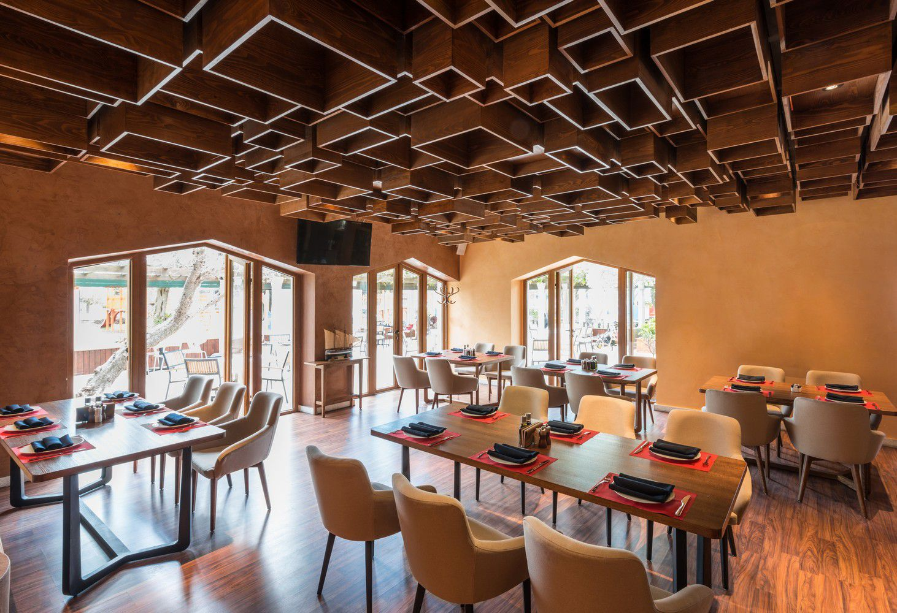
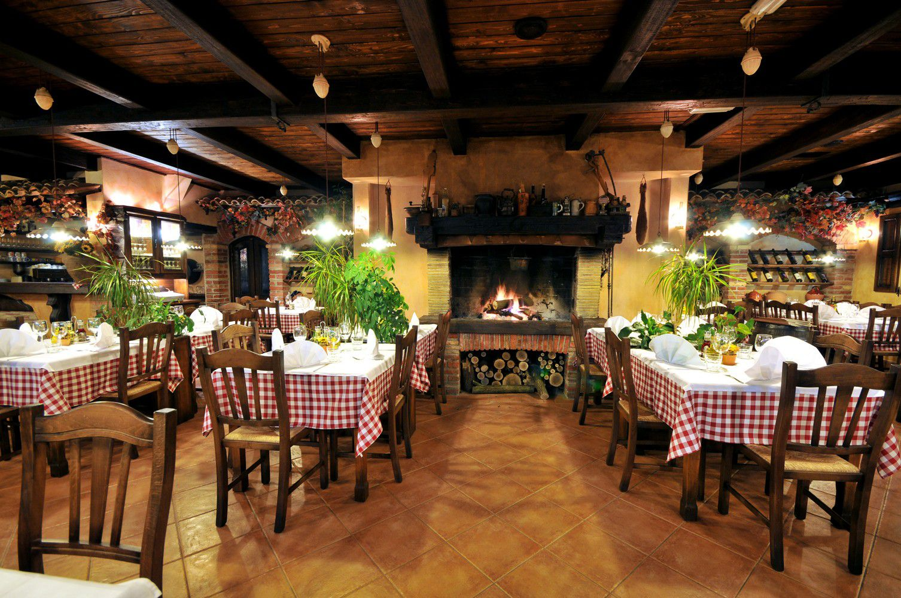

Om GastroPub
Hos Gastropub lægger vi stor vægt på frisk mad komponeret fra bunden
med sæsonens råvarer. I restauranten serveres der krogmodnet kød. I
køkkenet bruger vi den moderne inspiration i en sammenblanding med
det klassiske køkken, når vi anretter tallerknerne.
På vores restaurant vil du opleve, at alle råvarer kommer til udtryk
i retterne. Din oplevelse på Gastropub skabes af maden, stemningen,
omgivelserne og hyggen. Vi håber derfor, at dette er med til at
skabe en fantastisk smagsoplevelse for vores gæster.
Menukortet består af få, men gode retter. Disse retter er
velovervejet og nøje udvalgt, for at imødekomme gæsterne, da der er
tænkt over hver en detalje på tallerknerne. A la carte menuen består
af 3 retter. Disse retter bliver skiftet ud hver tredje måned, samt
er der hver måned en særlig månedsmenu med sæsonens råvarer.
"At skabe et sted for dig og dine venner at bruge
kvalitetstid sammen er et primært formål.
Bob Vestermark – Ejer
 